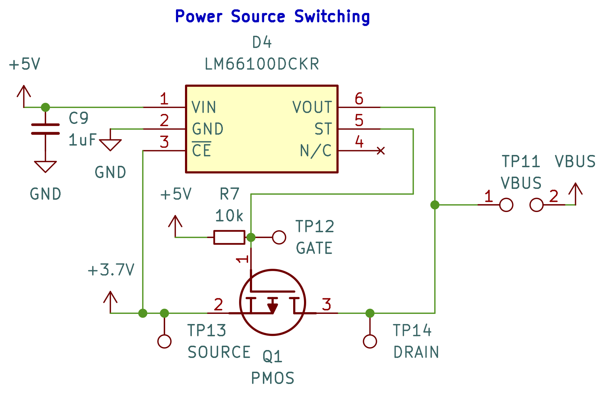
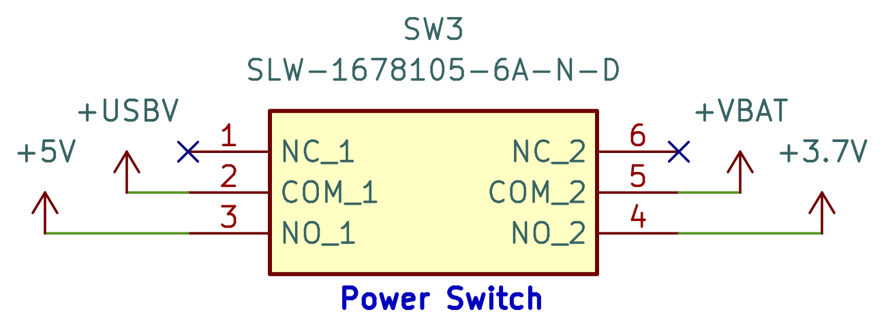
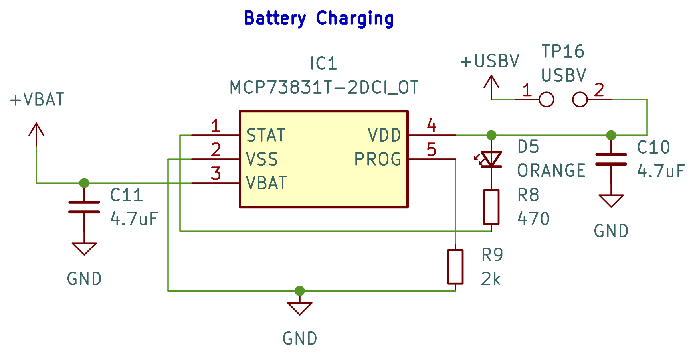

Custom PCB for Interactive Haptic Device
The goal for this project was to design and build a custom PCB with three inputs and outputs using an SAMD21 as the microcontroller and a USB-C port for data and power. Furthermore, my professor would only spend $15 on new components (keyword: new). I was dead set on the idea of making a circular PCB, so the rest of the design was decided with this in mind, including my decision to use my own money on this beautiful round TFT LCD for the aesthetics, but a cheap $1, 128x128 OLED would have sufficed.
The final product features 16 white LEDs controlled by a 16-channel I2C LED driver, a 6-axis I2C IMU, a Linear Resonant Actuator controlled by an I2C haptic driver, the aformentioned 240x240 round TFT display controlled over SPI by a built-in display driver (it also has a built-in microSD card reader), a capacitive touch scroll wheel, an ambient light sensor, and a battery management system with power path control. I also went a little heavy on the silkscreen decals, but I think it looks pretty cool.
I coded the firmware in C++. Here is a video demoing the hardware's capabilities:
Schematic
You can find a PDF of the schematic here. The sections below provide a deeper look into each component.
SAMD21
LED Driver
6-Axis IMU
Haptic Motor Driver
TFT Display
Capacitive Touch Scroll Wheel
Ambient Light Sensor
this is the section about the ambient light sensor
Battery Management System
I further challenged myself by implementing a power management system for a 3.7V LiPo battery, which was supplied by the maker's space I worked at on campus (i.e. $0 towards the budget). This system automatically switches between USB-C and the battery, as well as charges the battery. While simply routing the 5V from the USB-C through the voltage regulator would technically be sufficient, I really wanted this to be a true handheld device. My friend, Alec, and I collobarated on this aspect of the design. After days of staring at datasheets, here's what we came up with:
Automatic Power Source Detection
The LM66100 is an ideal diode IC. The USB-C's 5V is connected to Voltage IN, while the LiPo battery's 3.7V is connected to Chip Enable. When the voltage at CE is higher than VIN (e.g. when USB-C is disconnected and VIN reads 0V), then the IC is disabled and its internal MOSFET is off, so Voltage OUT outputs 0V. This also causes STatus output to be pulled low, which allows us to use it to turn on the gate of an external P-MOSFET. When the device is enabled, ST will be Hi-Z, so the P-MOSFET's gate will be pulled high throught the pullup resistor, turning it off. The IC's VOUT and the P-MOSFET's drain are then connected and passed on to the voltage regulator.
In summary, when USB-C is available, the IC is enabled and the P-MOSFET is turned off, blocking the 3.7V, and 5V from VOUT is fed to the voltage regulator. When USB-C is disconnected, the IC is disabled and the P-MOSFET is turned on, allowing the 3.7V to be fed to the voltage regulator.
Could we have just used Schottky diode ORing to basically achieve the same result? Yes, but this design is safer and more efficient since it wastes a negligible amount of power, isn't prone to overheating, and has incredibly minimized reverse-current leakage. This is especially important when using batteries, as we didn't want the battery to still be discharging while the device was being powered by USB-C.
DPDT Switch
The voltages from the USB-C port, +USBV, and the LiPo battery, +VBAT, first went through this power switch outputting 5V and 3.7V respectively. This specific switch is rated for 1A of current, which I chose as a safety precaution since my board uses 16 LEDs and a TFT display.
Battery Charging
The MCP73831 is a linear charge managment controller for single-cell Li-ion and LiPo batteries. The USB-C's 5V is connected to VDD, the battery's positive terminal is connected to VBAT, and VSS is tied to the shared ground between both voltage sources. While the battery is charging, STAT is pulled low, completing the circuit for the orange LED, thus indicating to the user that the battery is actively charging. Note that the labels for the USB-C and battery's voltages are +USBV and +VBAT, not +5V and +3.7V that are outputted by the DPDT switch. This ensures that the device does not need to be on to charge the battery.